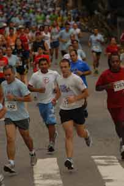
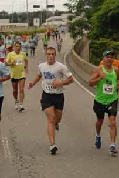

vamo, vamo, vamo…
Posts tagged Testemunhos Thiago
Treino de 9 km, total da semana 29 km
48 years
Hoje o treino foi cheio de surpresas, quando cheguei ao museu pra treinar não podia entrar por causa da chuva de ontem, caiu muitas arvores lá dentro então fiz um plano “B” fiz o treino com a subida da AV Nazaré, 3 voltas de 3 km cada uma totalizando 9 km, no meio desse treino fiz corrida com obstáculos, estava cheio de pedaços de arvore e lixo no chão por todo o percurso, consegui transpor quase todos com exceção de uma enorme arvore atravessando a rua próximo a praça do monumento, a arvore era enorme, do tempo de Dom Pedro isso se não foi ele quem a plantou, passei pelo cantinho dela e segui, gostei desse treino por causa da subida da AV Nazaré, gosto de subidas, foi isso pessoal abraços e boas corridas.
Treino de 10km, total da semana 20km
38 years
Hoje foi igual a ontem e espero que amanhã seja igual a ontem e hoje üòÄ
Bom é isso pessoal fiz meus 10 km tranqüilo sem forçar e sem rastejar, treino bom e focado sem oscilação de ritmo, o que esta me ajudando muito foram os treinos em subidas que fiz nas ultimas semanas, deu uma ótima base pra musculatura.
Alex e Claudio postem os treinos üòÄ
De volta ao Museu do Ipiranga
28 years
Agora que começaram as aulas os treinos voltam a ser de manhã, onde estava treinando era muito bom por causa das subidas, mas treinar somente no asfalto não faz bem e a pista de corrida do museu é de terra, o trecho de asfalto é pouco.
Treino de hoje: Foram 10 km, agora vai ser assim na semana tenho que fazer entre 8 e 10 km para adquirir volume de treino, isso todos os dias e de sábado longão, o treino de domingo deve ser um treino leve de 6 km, os treinos semanais vai ter um volume de 60 a 80 km, dependendo de como vai ser o longo e segunda-feira é descanso.
Treinos de sexta e sábado
38 years
Sexta-feira eu fiz um treino bem leve 6 km isso foi na parte da tarde, pois sábado de manhã a intenção seria de fazer um treino longo de 20 km então sábado bem cedinho acordo 7:00h da manha, estava chovendo forte, coloco o relógio para 08:00h ainda chove, resolvo levantar e ficar vendo televisão até melhorar quando deu 09:00h a chuva deu uma trégua e fui correr, no meio do treino esta com uns 6 km começou a chover muito forte eu continuei até onde deu que foram 15 km daria pra fazer os 20 km mas começou a fazer uma bolha no pé direito, resolvi não forçar e eu estava bem cansado também, fiz treinos na quarta, quinta e sexta então seria certo que sábado não estaria 100% e fazer longo lá em casa como já disse é terrível, fiquei um pouco chateado por não ter conseguido fazer os 20 km porem estou longe de desanimar, sábado que vem tento novamente, vou para USP onde é mais plano.
Treino de hoje 12 km
48 years
Hoje o treino foi bom, mas quase não foi, logo que iniciei o treino na primeira volta “cada volta são três quilômetros” comecei a sentir um pouco de dor na perna esquerda, parecia inicio de canelite que é uma inflamação que da no osso da canela, costuma aparecer em decidas pensei em dar mais uma volta e para com seis quilômetros de treino mas a dor foi sumindo e pensei só mais uma volta ai seriam nove quilômetros quando completei pensei porque não mais uma volta e assim foram doze quilômetros.
Não sei se repararam, mas não falei mais de tempo por aqui, adotei uma nova estratégia, não da pra correr por tempo em todos os treinos, mas como me conheço se levasse o relógio poderia tentar fazer um tempo mais baixo em todos os treinos o que é impossível então como agora estou treinando por distancia por causa da maratona deixei o relógio de lado, deixo o tempo para as corridas, então ai vai a dica quando for fazer treinos longos esqueça o relógio treine por distancia comigo deu certo.
Estou gostando da evolução dos treinos hoje corro quinze quilômetros com facilidade e isso é bom quero logo fazer os vinte quilômetros que acho que encaro de boa lembrado que onde treino não é fácil, mas acredito que é a melhor coisa, estou adorando as subidas e onde moro são verdadeiros morros, pra quem não lembra vai mais uma imagem com altimetria.

Últimos treinos
38 years
Pessoal faz tempo que não posto desde minha ultima corrida, mas venho treinando então vou colocar aqui de forma resumida como estou indo.
17/01 Corrida de 10 km do SESC Santo Amaro
19/01 Treino de 6 km
20/01 Treino de 9 km
22/01 Treino de 15 km, esse foi meu treino “Longo” que agora precisa ser mais longo.
Dias 23, 24 e 25/01 eu não treinei viajei  para um sitio  e no dia 25 resolvi não treinar.
26/01 Treino de 9 km Tinha que treinar já estava há três dias parado, foi um treino bom estava um tempo chuvoso a chuva vinha e passava porem não chegou a atrapalhar, estava bem concentrado, hoje pretendo treinar e seguir em um ritmo bom até o sábado onde quero fazer um treino mais longo de 20 km e tentar ser mais disciplinado para correr bem a maratona.
Abraço pessoal e bons treinos.
Corrida Sesc Santo Amaro
28 years
 Esse ultimo domingo fui correr os 10km do SESC Santo Amaro, prova muito boa no começo estava preocupado porque não treinei na ultima semana mas me senti muito bem durante a prova, durante os primeiros 5km sem sinal de fadiga eu estava 100% quando contornei e estava chegando ao 6Km estava com muito pique e comecei a abrir a passada e completei a prova em 47Min e 45Seg, terminei bem e logo estava recuperado na classificação geral fiquei em 274º num total de 848 inscritos masculino, fiquei muito feliz com o tempo essa semana volto a treinar normal.
Esse ultimo domingo fui correr os 10km do SESC Santo Amaro, prova muito boa no começo estava preocupado porque não treinei na ultima semana mas me senti muito bem durante a prova, durante os primeiros 5km sem sinal de fadiga eu estava 100% quando contornei e estava chegando ao 6Km estava com muito pique e comecei a abrir a passada e completei a prova em 47Min e 45Seg, terminei bem e logo estava recuperado na classificação geral fiquei em 274º num total de 848 inscritos masculino, fiquei muito feliz com o tempo essa semana volto a treinar normal.
Referente ao post feito pelo Claudio sobre os preços da Corpore essa corrida do SESC não deixou nada a desejar em comparação a ela, a camiseta muito boa e a medalha de melhor qualidade e pelo preço de 15 Reais a inscrição é isso mesmo 15 Reais, sou comerciário, mas para quem não é o preço fica sendo 30 Reais o que esta ótimo, eles dão lanchinho no final, isotônico e água igual todas as corridas, parabéns ao SESC pela organização.

Com a língua de fora.
38 years
Ontem fui treinar na parte da tarde na pista de Cooper do museu do Ipiranga, foram 15 voltas de 1km cada, fiz esses 15km em 01h e 15min, gostei muito do treino mas me senti um pouco fraco no final mas sem diminuir o ritmo, depois lembrei que só havia almoçado e fui correr as 18:30h de barriga vazia, bobeira minha depois no ônibus deu queda de pressão e por causa disso perdi o treino de hoje, como ontem fiquei fraco hoje resolvi descansar.
Mudei os planos do treino longo, vendi a moto então fica inviável ir até a USP de trem, o treino longo será perto de casa mesmo porem fazer 20km lá vai ser mais difícil pois tem muita subia, sábado vejo o que consigo.
Últimos treinos
138 years
Segunda-feira:  fiz um bom treino, 9km  onde eu moro é bem puxado são muitas subidas e comecei a sentir a lombar.
 Terça-feira: foi aqui no Museu do Ipiranga, foram 7km tranquilo.
 Quarta-feira: (hoje) não fui treinar, estava sentindo mais dores na lombar e resolvi não correr, amanhã treino normalmente não quero forçar agora como os treinos estão sendo bem focado para maratona tenho que estar bem pra sábado onde é o principal treino, sábado vou fazer meus treinos logos, quero começar com 20km vamos ver se consigo.
Já ia esquecendo, meus treinos longos serão na USP 2 voltas de 10Km todos os sabados se alguem quiser aparecer por lá, quero chegar entre 07:00h e 08:00h, essa distancia vai durar uns 3 finais de semana e depois vou aumentando e diminuindo.
O desafio!
58 years
Ano passado, mas não tão distante anuncie aqui no blog que teria um desafio, ele já tem data marcada dia 02/05 nesse dia acontece a Maratona de São Paulo e junto com ela uma corrida de 25Km uma de 10Km e caminha de 3Km, então tem para todo gosto.
 Ainda preciso falar do desafio?
Quero encarar os 42km mas se sentir difculdade nos treinos vou pros 25Km já montei uma planilha das competições que quero correr até lá e ainda tem os treinos que já esta tudo na cabeça e outro dia posto aqui.

 Então ai vai Claudio, Alex e leitores do blog qual desafio vocês querem?
42Km?
25Km? — Claudião devidamente inscrito, com 4 meses de anteced√™ncia —
10Km?
3Km?
 
O desafio esta ai e não tem desculpas, pois temos exatamente cinco meses até esse dia.
.jpg "DSC01713 (576x1024)")
.jpg "DSC01784 (1024x576)")
.jpg "DSC01795 (1024x576)")
.jpg "DSC01884 (1024x576)")
.jpg "DSC01915 (1024x576)")


{kind=link}
Últimos comentários